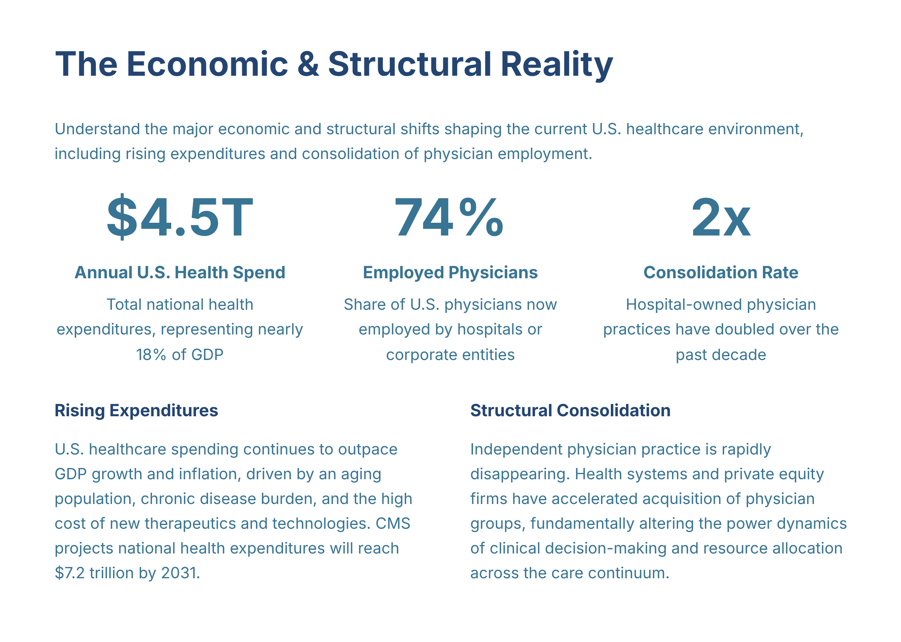

#1
The Economic & Structural Reality
slide-01
creativevariant Acluster headCoherence pendingcard 1orientation landscape
Approved slide

[+]Asset status: present | Dimensions: 2400×1712
Motion review: Motion: static | n/a
Cluster c-u01Position establishInterstitial type n/aIsolation target n/aDevelop type n/aArc From isolated clinical perspective to enterprise-level awareness through paired economic and employment trend evidence
Script
Status: Attached
80 words@150 WPM 32.0shead narrationtiming concept-builddensity heavyposition establishintent credibleintent serves master
Let’s anchor in the scale: U.S. health spending sits around $4.5T, nearly 18% of the economy. That trajectory isn’t slowing—CMS projects it passing $7.2T within the planning horizon. In a separate thread, the workforce has shifted: about 74% of physicians are now employed, as practice ownership has consolidated roughly 2x. The stake for you is real—autonomy is now mediated by system design. To change outcomes, influence the enterprise, not just a single clinic.
Script notes
The Economic & Structural Reality — Understand the major economic and structural shifts shaping the current U.S. healthcare environment, including rising expenditures and consolidation of physician employment.
Voice direction
Voice direction: using global/default settings
Evidence & provenance
- Source ref
- n/a
- File path
- gary/A-literal_slide-01.png
- Created
- 2026-07-13T15:40:46.450946+00:00
- Literal-visual source
- n/a
- Matched segments
- seg-01
- Narration refs
- n/a
- Visual refs
- 0
- Visual mode
- n/a
- Visual file
- n/a
- Motion type
- static
- Motion status
- n/a
- Motion source
- n/a
- Motion duration
- n/a
- Runtime target (s)
- n/a
- Motion asset
- n/a
- Timing role
- concept-build
- Content density
- heavy
- Visual detail load
- medium
- Bridge type
- intro
- Behavioral intent
- credible
- Duration rationale
- Multiple quantified claims require a careful synthesis before landing the enterprise-level implication.
- Cluster position
- establish
- Interstitial type
- n/a
- Isolation target
- n/a
- Quality
- Vera None | Quinn None
Findings
No findings attached.